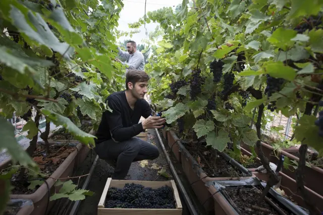
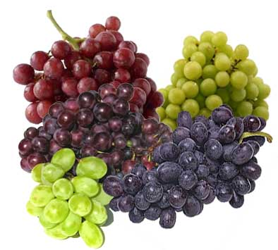
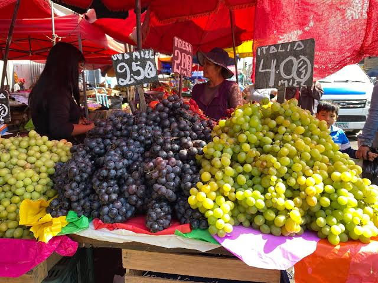
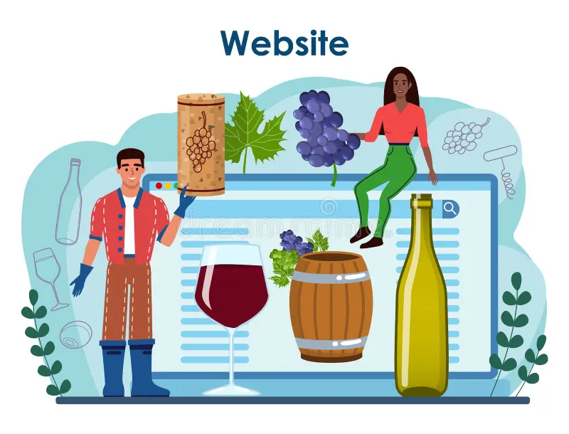

2015
Grupo Molina nace como un pequeño proyecto familiar enfocado en la comercialización de uvas de mesa producidas en Sonora.
 Grupo Molina
Grupo Molina
En Grupo Molina compartimos una pasión por la calidad y la riqueza agrícola de Sonora, México. Nos dedicamos a la comercialización y distribución mayorista de uvas de mesa, ofreciendo diferentes variedades para satisfacer las necesidades de nuestros clientes.
Nuestro propósito es conectar la producción agrícola de la región con distribuidores y negocios que buscan productos de calidad. Trabajamos para facilitar la selección de variedades, la planificación de pedidos y la organización de su transporte.
En Grupo Molina buscamos construir relaciones comerciales basadas en la confianza, el compromiso y la responsabilidad, llevando las uvas de Sonora a nuevos mercados.

Grupo Molina nace como un pequeño proyecto familiar enfocado en la comercialización de uvas de mesa producidas en Sonora.

La empresa amplía su catálogo de uvas de mesa, incorporando nuevas variedades para ofrecer diferentes opciones a sus clientes y fortalecer su participación en el mercado mayorista.

Grupo Molina comienza a distribuir sus productos hacia nuevas ciudades, estableciendo relaciones comerciales con distribuidores y negocios dedicados a la comercialización de frutas.

Grupo Molina desarrolla su plataforma web para dar a conocer sus variedades de uvas, temporadas de disponibilidad y opciones logísticas, facilitando la consulta de productos y la solicitud de cotizaciones mayoristas.
Conectar la riqueza agrícola de Sonora con distribuidores y negocios, ofreciendo uvas de mesa de calidad en diferentes variedades, con pedidos bien planificados, transporte organizado y entregas puntuales.
Ser un aliado comercial de confianza para distribuidores en México y más allá, reconocido por la calidad de nuestras uvas y por llevar los sabores de Sonora a nuevos mercados.